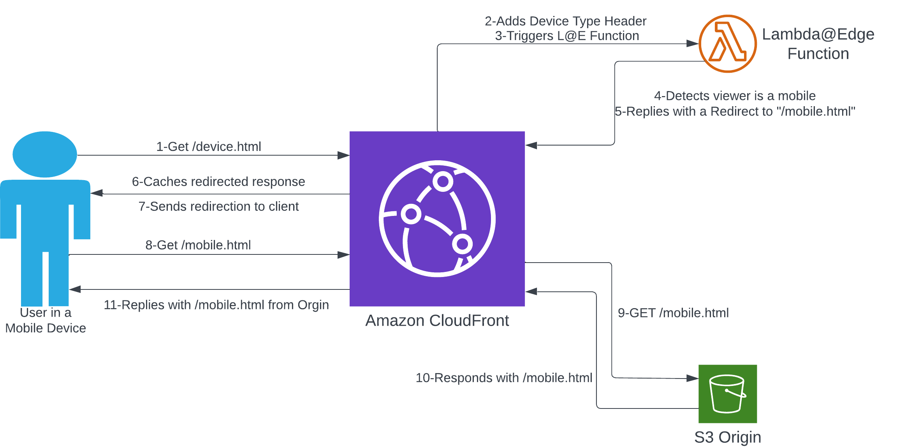
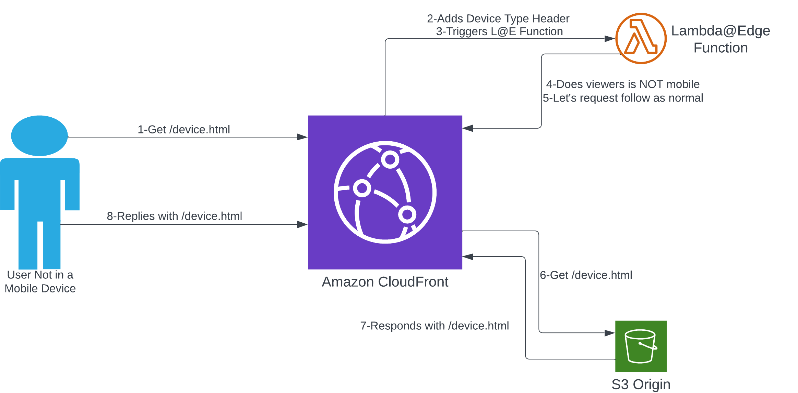
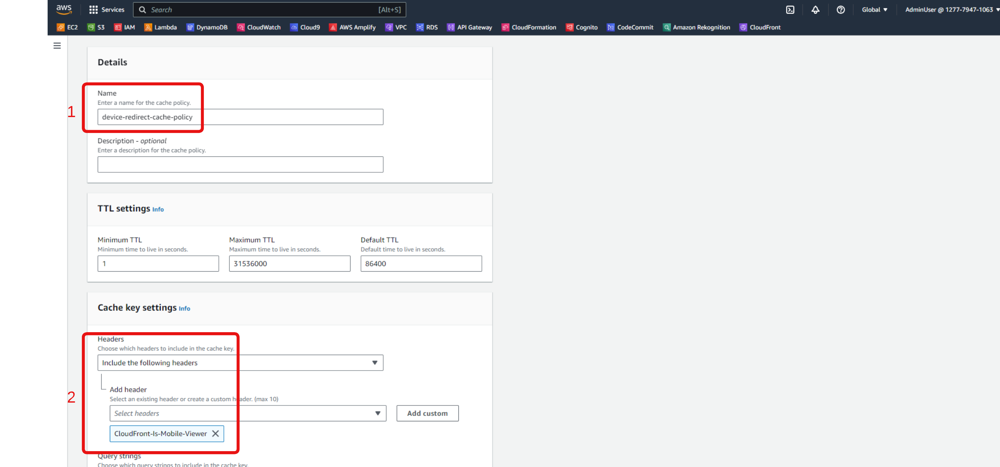
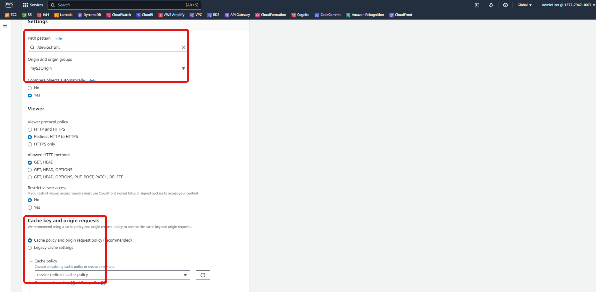
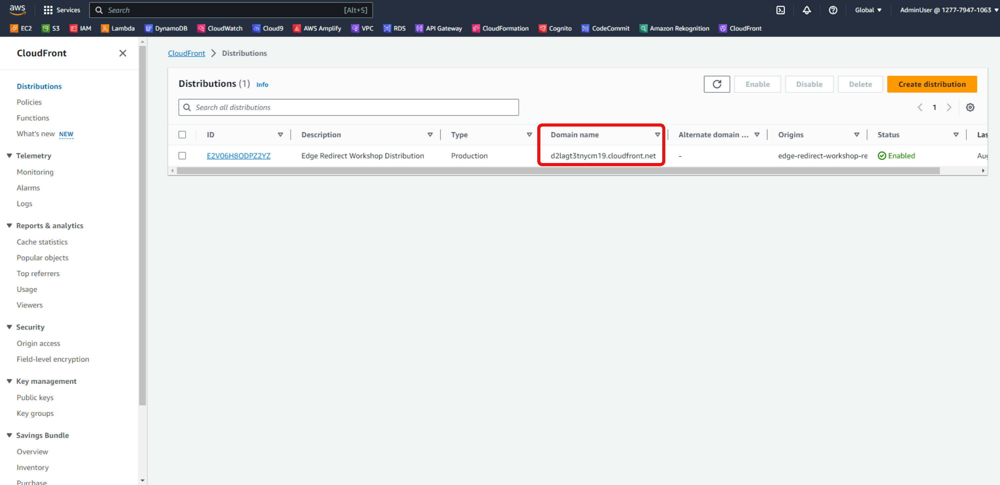

This case is used to redirect the viewer to the website’s proper page based on the type of device sending the request. The following diagram shows the architecture and requested steps that we will do in this section.
 
To be able to Redirect users based on device type, CloudFront headers determine the device type of the user that will be linked to the Lambda@Edge function. To do that, you will need to create a Cache Policy in which a header is added to the cache key. In this workshop, you will use CloudFront-Is-Mobile-Viewer but other headers are also available.
Go to the [CloudFront Policies console] page(https://us-east-1.console.aws.amazon.com/cloudfront/v3/home?region=us-east-1#/policies/cache). We do the same as the Geo Location Redirects section above, we create a Cache Policy named device-redirect-cache-policy. And in Headers of the Cache key settings section, we search and select CloudFront-Is-Mobile-Viewer. Finally, we click on the Create button.

In this step, we will do as in the previous section, create a Lambda function with the name edge-device-redirect, Runtime is Python 3.9 and deploy it. After that, we need to publish the new version of the Lambda function we just created.
The source code of this Lambda function is:
import json
def lambda_handler(event, context):
print(event)
#Let's first get the Device Type from the Request coming in
get_device_viewer_header = event['Records'][0]['cf']['request']['headers']['cloudfront-is-mobile-viewer']
define_device_type = get_device_viewer_header[0]['value']
print(define_device_type)
#Now let's see if this device is a mobile viewer or not and create the redirected response based on that
if (define_device_type == 'true'):
response = {
'status': '301',
'statusDescription': 'Permanent Redirect',
'headers': {
'location': [{
'key': 'Location',
'value': '/mobile.html'
}]
}
}
#The response above has been created and a response will be sent to the viewer to redirect it the right device page
return response
else:
#if the device is not mobile, then move along with the request as is.
request = event['Records'][0]['cf']['request']
return request
Now the Lambda function has just been created and we have to assign it to a Cache Behavior in CloudFront. We do the same as the Geo Location Redirects section above. With the Path Pattern, we enter /device.html and remember to select the Cache policy as the device-redirect-cache-policy just created above.

We do as in the Geo Location Redirects section above, we will combine the Lambda function edge-device-redirect with the CloudFront Behavior just created above.
We will need a client to run curl commands. The easy way is to create CloudShell Environments. CloudShell is a shell available in the AWS console and we can run Linux commands from it. Go to CloudShell Console and wait until the terminal is ready to use.
If CloudShell does not work, if you are doing this workshop on a Linux/MacOS client, these two operating systems already have curl and you just need to run the command on that client. If you are using Windows, use online curl tools like this one. You can run an EC2 instance or Cloud9 IDE from AWS COnsole to run commands.
Go to CloudShell Console.
In the test, we will run the curl command to send http requests against our distribution, to do so, we need to copy the Distribution domain name from the CloudFront console where we can find it.

Once you’ve found the distribution domain name, copy the following command and replace it with our domain name.
curl -v -o /dev/null https://<YOUR-DISTRIBUTION-DOMAIN-NAME>/device.html
< HTTP/1.1 200 OK
< Content-Type: text/html
< Content-Length: 106
< Connection: keep-alive
< ETag: "73940ca66258e1bd0a623690f24fe324"
< Accept-Ranges: bytes
< Server: AmazonS3
< X-Cache: Miss from cloudfront
< Via: 1.1 2f66aa06710fece8ed203ab0ea81eb56.cloudfront.net (CloudFront)
< X-Amz-Cf-Pop: IAD89-C3
< X-Amz-Cf-Id: ChlZowW_za1QF6FVmDX2iTENoknUBJxoxpMNV6S28E37g0khLdnxwg==
<
<!DOCTYPE html>
<html>
<body>
<h1>non-mobile URI Page</h1>
<p>non-mobile URI Page</p>
</body>
</html>
The above request shows a regular response. This happens simply because the device we send the request to is not recognized by the Lambda@Edge function as a mobile device and it allows the request to proceed normally.
curl -v https://d2lagt3tnycm19.cloudfront.net/device.html -A "Mozilla/5.0 (iPhone; CPU iPhone OS 6_1_3 like Mac OS X) AppleWebKit/536.26 (KHTML, like Gecko) CriOS/28.0.1500.12 Mobile/10B329 Safari/8536.25"
We will see different responses.
< HTTP/1.1 301 Moved Permanently
< Content-Length: 0
< Connection: keep-alive
< Server: CloudFront
< Location: /mobile.html
< X-Cache: Miss from cloudfront
< Via: 1.1 a4cae74c829bc214e4183c38164a2c0a.cloudfront.net (CloudFront)
< X-Amz-Cf-Pop: IAD89-C3
< X-Amz-Cf-Id: sQ0_5pUMkOAJOBJUiTdDmEKGaq7ExMDotLmPsi-17WouwqcJBu7mNA==
<
The response here is currently HTTP 301, indicating redirect. This happens because the requested User-Agent is identified as a mobile device, our Lambda@Edge catches that and responds with a redirect.
< HTTP/1.1 301 Moved Permanently
< Content-Length: 0
< Connection: keep-alive
< Server: CloudFront
< Location: /mobile.html
< X-Cache: Hit from cloudfront
< Via: 1.1 38ecebcaa39c8742da2b6336935bb446.cloudfront.net (CloudFront)
< X-Amz-Cf-Pop: IAD89-C3
< X-Amz-Cf-Id: 97bOlPobmuIto-LcDA5AbPprf6oXSniK4pq16RRpZSjVPVSb8HUr4Q==
< Age: 133
The main difference here is that the X-Cache header has the value Hit from cloudfront, meaning this function does not need to be run again because the request has been cached.
So we have successfully deployed redirect logic using Lambda@Edge and finished testing. This case can be expanded to be more complex, identifying not only mobile devices but also Android and IOS clients, identifying SmartTVs and Tablets can also be done. Okay. Refer to this document to learn more about all headers location is possible in CloudFront.